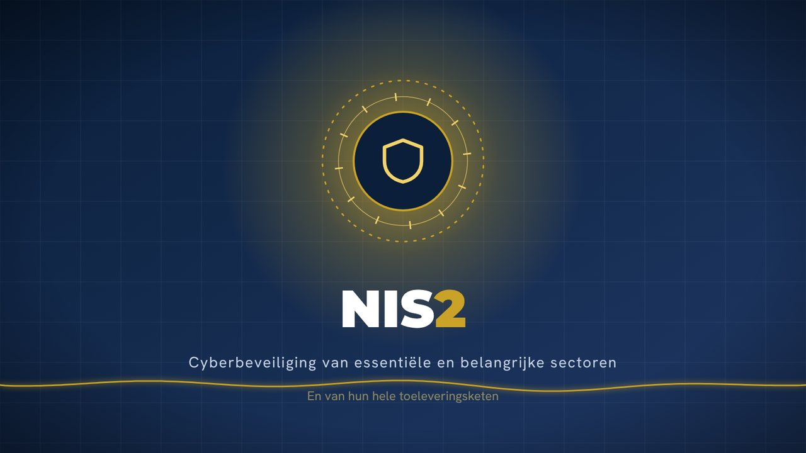

ARG
ARGARGOS › Regelgeving in 4 minuten › NIS2
NIS2 in 4 minuten: Nederland: wet zonder overgangstermijn
NIS2 is de Europese cyberbeveiligingsrichtlijn voor essentiële sectoren, en hun toeleveringsketen. Afwachten beschermt niet. De hele keten is verantwoordelijk. In Nederland is NIS2 wet, zonder overgangstermijn.

- 0:00De aanval
- 0:12De boetes
- 0:32Nationaal
- 0:55NIS2
- 1:06Vier stappen
- 1:27Tien maatregelen
- 1:46Data
- 2:07Europa
- 2:34Toezicht
- 2:54Wat te doen
Kerngegevens
- 10 mln. € of 2 % van de omzet · essentiële entiteiten
- 17.10.2024 uiterste omzettingsdatum
- 8.7.2026 gedaagd voor het Hof van Justitie
- 15.8.2026 Cyberbeveiligingswet in werking
- Vandaag wie niet klaar was, loopt achter
- Cbw Van kracht sinds 15 augustus 2026
- Vervangt de Wbni Breder en strenger
- NCSC Registratie en meldingen
Transcriptie
Volledige tekst van de voice-over
0:00 · De aanval
Maandag, zes uur 's ochtends. De systemen starten niet. De bestanden zijn versleuteld. De leverancier reageert niet. Wie meldt wat, aan wie, en hoe snel?
0:12 · De boetes
De NIS2-richtlijn kent boetes tot tien miljoen euro of twee procent van de omzet voor essentiële entiteiten. En ze vraagt incidenten in drie stappen te melden: 24 uur, 72 uur en een maand. Het bestuur keurt de maatregelen goed, en is aansprakelijk.
0:32 · Nationaal
In Nederland is NIS2 wet, zonder overgangstermijn. De Cyberbeveiligingswet geldt sinds 15 augustus 2026. Ze vervangt de Wbni. Entiteiten registreren zich bij het NCSC. Het toezicht ligt bij de sectorale toezichthouders. En klanten vragen het al in hun contracten.
0:55 · NIS2
NIS2 is de Europese cyberbeveiligingsrichtlijn voor essentiële sectoren, en hun toeleveringsketen. Afwachten beschermt niet. De hele keten is verantwoordelijk.
1:06 · Vier stappen
Wat ze vraagt, in vier stappen. Nagaan of je essentieel of belangrijk bent. Je registreren bij de nationale autoriteit. De tien maatregelen toepassen, goedgekeurd door het bestuur. En significante incidenten tijdig melden. De beveiliging van leveranciers is één van de tien maatregelen.
1:27 · Tien maatregelen
Van de tien maatregelen maken er vier het verschil. Risicoanalyse en beveiligingsbeleid. Incidentafhandeling en bedrijfscontinuïteit. Beveiliging van de toeleveringsketen. En multifactorauthenticatie en versleuteling. Artikel 21 van de richtlijn.
1:46 · Data
De Nederlandse data. 17 oktober 2024: de uiterste omzettingsdatum. 8 juli 2026: Nederland voor het Hof van Justitie gedaagd. 15 augustus 2026: de Cyberbeveiligingswet treedt in werking. En vandaag: wie toen niet klaar was, loopt achter.
2:07 · Europa
In Europa is NIS2 in veel landen al wet. Duitsland: 29.500 entiteiten, bestuur aansprakelijk. Italië: basismaatregelen afdwingbaar. België: CyberFundamentals. Portugal: bestuurders aansprakelijk. Nederland: zonder overgangstermijn. Denemarken: toezicht per sector. Frankrijk en Spanje zijn nog zonder wet.
2:34 · Toezicht
In Nederland is het Nationaal Cyber Security Centrum het loket voor registratie en meldingen. Het toezicht ligt bij de sectorale toezichthouders, zoals de RDI. De Wet weerbaarheid kritieke entiteiten komt erbij. En wie in Nederland levert, krijgt NIS2 via het contract.
2:54 · Wat te doen
Wat nu te doen. Reikwijdte bepalen, registreren, maatregelen toepassen, meldingen voorbereiden en leveranciers verplichten. ARGOS toetst het doorlopend, met sondes op de echte systemen en bewijs voor auditor en klant. NIS2: cyberbeveiliging moet je aantonen.
Veelgestelde vragen
Wat is NIS2?
NIS2 is de Europese cyberbeveiligingsrichtlijn voor essentiële sectoren, en hun toeleveringsketen. Afwachten beschermt niet. De hele keten is verantwoordelijk. De NIS2-richtlijn kent boetes tot tien miljoen euro of twee procent van de omzet voor essentiële entiteiten. En ze vraagt incidenten in drie stappen te melden: 24 uur, 72 uur en een maand. Het bestuur keurt de maatregelen goed, en is aansprakelijk.
Wat vraagt NIS2?
Wat ze vraagt, in vier stappen. Nagaan of je essentieel of belangrijk bent. Je registreren bij de nationale autoriteit. De tien maatregelen toepassen, goedgekeurd door het bestuur. En significante incidenten tijdig melden. De beveiliging van leveranciers is één van de tien maatregelen.
Wat zijn de belangrijke data?
De Nederlandse data. 17 oktober 2024: de uiterste omzettingsdatum. 8 juli 2026: Nederland voor het Hof van Justitie gedaagd. 15 augustus 2026: de Cyberbeveiligingswet treedt in werking. En vandaag: wie toen niet klaar was, loopt achter.
Wat geldt er in Nederland?
In Nederland is NIS2 wet, zonder overgangstermijn. De Cyberbeveiligingswet geldt sinds 15 augustus 2026. Ze vervangt de Wbni. Entiteiten registreren zich bij het NCSC. Het toezicht ligt bij de sectorale toezichthouders. En klanten vragen het al in hun contracten. In Nederland is het Nationaal Cyber Security Centrum het loket voor registratie en meldingen. Het toezicht ligt bij de sectorale toezichthouders, zoals de RDI. De Wet weerbaarheid kritieke entiteiten komt erbij. En wie in Nederland levert, krijgt NIS2 via het contract.
Wat moet een bedrijf nu doen?
Wat nu te doen. Reikwijdte bepalen, registreren, maatregelen toepassen, meldingen voorbereiden en leveranciers verplichten. ARGOS toetst het doorlopend, met sondes op de echte systemen en bewijs voor auditor en klant. NIS2: cyberbeveiliging moet je aantonen.
Officiële bronnen
- Richtlijn (EU) 2022/2555 (NIS2) (EUR-Lex)
- Uitvoeringsverordening (EU) 2024/2690 (EUR-Lex)
- NCSC
- Regelgevingsfiches van Software in a Box
Ga verder met
 Data Act en DGA
Data Act en DGAData Act en DGA in 4 minuten: Nederland: een toezichthouder met tanden
 BIO en ISO
BIO en ISOBIO en ISO in 4 minuten: Bewijs is geen formulier
 AVG
AVGAVG in 4 minuten: Er wordt vooral beboet op de basis
Stem en muziek gegenereerd met kunstmatige intelligentie (art. 50 AI-verordening). Algemene informatie, geen juridisch advies; stand van zaken november 2026, volgens de regelgevingsfiches van Software in a Box. Videoclips onder licentie van Envato.
Deze presentatie insluiten op een andere website: <iframe src="https://argos.softwareinabox.eu/nl/regelgeving/nis2/presentacion/?embed=1" width="960" height="540" allow="autoplay; fullscreen" title="NIS2 in 4 minuten: Nederland: wet zonder overgangstermijn"></iframe> met een link naar deze pagina.
Ook beschikbaar in: EspañolDeutschFrançaisFrançais (Belgique)ItalianoNederlands (België)PortuguêsDansk